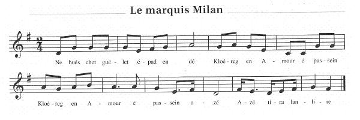

Ar markiz Milan
Le Marquis Milan
The Marquis Milan
Texte recueilli par l'Abbé François Cadic
Publié dans "La Paroisse Bretonne" en novembre 1906
Mélodie
"Ar markiz Milan"
Source: "La Paroisse Bretonne", novembre 1906
Arrangement Christian Souchon (c) 2013
|
BREZHONEG (Stumm KLT) AR MARKIZ MILAN [1] I (Er ru) Milan 1. - N'ho-peus ket gwelet epad an deiz Kloareg an Amour pasañ aze? Tremener 2. - Evidoc'h-c'hwi goulenn kloereg Me ne ouzhon ket petra a larit. 3. Mar d'eo Kloareg an Amour glaskit Ne d'eoc'h ket deuet mat evit hen kavoud. 4. Aet eo a-benn gant an hent d'an uhel Gant ur plac'hig yaouank doc'h e gostez. 5. Ema du-hont war al leur nevez Fignanten ar C'halvez doc'h e gostez. 6. Daou bropikañ den ' gerzh ar pave A zo bet biskoazh hag a vo ivez. 7. A zo bet biskoazh hag a vo ivez A zo erruet war al leur nevez. - ... 8. Ez a markiz d'ar ger maliset Evit lakaat da vridañ e roñsed. II (War al leur nevez) Fignanten [2] 9. - Kloareg an Amour, mar am c'harit, War al leur nevez-mañ ne chomomp ket. 10. Kloareg, kloareg, prontik echapit, Rak ema Markiz Milan o toned! 11. Rak ema Markiz Milan o toned! Me glev ac'halenn brudañ e roñsed. Kloareg [3] 12. - N'eo ket a-gaoz da varkiz Milan E vo red din-me skarzh eus al leur-mañ. 13. Ha markiz Kernev , ha laoskit anezhañ! Mar n'ez eus ket 'metañ m'hen c'honjuro. - Milan 14. - Dit-te boñjour, kloareg an Amour, Hag a zo o lezañ ar merc'hed flour! - Kloareg 15. - O Markiz Kernev, va eskuzit: Kar lezañ ar merc'hed 'meus ket disket. 16. Homañ a zo ur verc'h a va lignez Hag a zeu ganin pa ez in d'ar ger. Milan 17. - Pell zo e klevan z oc'h ur paotr mat Ha deomp-ni bremañ d'ober ur c'hombat: 18. Re a ruban zo war da zilhad Evit lared maz oc'h ur c'hloareg mad. 19. Te zoug un habid seiz ha ruban: Me zo-me markiz, ne zougan 'med pan. Kloareg 20. - Mar 'meus un abit ruz eskarlat Me hello-me hen dougañ hardizh mat. 21. Me c'hell hen dougen gant hardizhegezh: Va zad ha va mamm 'deus hen gwall-baeet. 22. Bez' zo ur c'hemener e Gwened A ray un all deoc'h-c'hwi mar karit. Milan 23. - Me 'meus-me ur c'hleze hir ha ledan Hag a zistago fonnapl da ruban. 24. Me 'meus un arall hir ha moan: Hennezh a dreuzfe forzh aes un den. Kloareg 25. - Me 'meus un tamm koad derv doc'h va c'houriz Hag a c'houeledo pourpoent ur markiz. Milan 26. - Ha taolomp breman hon porpouentoù Ha deomp-ni da gomañs hon gourennoù. - ... 27. Teir zro a-hed d'al leur hag eñ a reas Ha markiz Milan hag eñ a zemplas. Milan 28. - Kloareg an Amour, mar va c'harit Ganin-me d'an davarn-hont e teufec'h. 29. Ganin-me d'an davarn-hont e teufec'h, Ha c'hwi evo gwin gwenn pehini garfec'h. Kloareg 30. - Ganeoc'h d'an davarn me ne z'in ket Gant aoñ vras ma deufec'h-c'hwi ha me dreisfec'h... - ... 31. Tre ma oa bet oc'h evañ e werenn gwin A oa bet taolet war benn a zaoulin. 32. Ne oa ket c'hoazh e gomzoù laret Ar markiz Milan en-doa hen lazhet. III (E ti tud ar c'hloareg) Fignanten 33. - Bonjour, va zadeg ha va mammeg, Kerzhit-c'hwi da glask ho mabig kloareg! 34. Ma el leur nevez war e c'henoù. Gwad a red dindanañ a bouilhadoù. Mamm-gaer 35. - O, Fignanten Kalvez, va merc'heg, Piv deus lazhet aze ho tous kloareg? Fignanten 36. - Ar markiz ha tud e di O-deus bet hen lazhet dre zreizoni. 37. Me c'houlen-me ar c'hras-mañ gant Doue Ma vin ket e buhez e korf eizh deiz, 38. Ma vin ket bev e korf eizh deiz Rag me zo bet-me kaoz d'ar maleur-se. Mamm-gaer 39. - O Fignanten Calvez, va merc'heg An abit seiz du bremañ a zougfec'h. Fignanten 40. - An abit seiz du ne zougin ket, Med unan seiz melen ne laran ket. 41. Larit d'ar person ha d'ar c'hure, Larit ne pas lakaat douar war e vez. 42. Ne pas lakaat an douar war e vez Rag me yelo doc'htañ ken ma vo tri deiz. - ... 43. Ha ne oa ket kozh he gomz laret, Ar markiz Milan en-doa he lazhet. 44. Lerc'h ur maleur setu un all erru Abalamour da Fignanten Kalvez! [4] KLT gant Christian Souchon |
FRANCAIS LE MARQUIS MILAN [1] I (Dans la rue) Milan 1. - Toute la journée je l'ai cherché, Le clerc Lamour: l'a-t-on vu passer? Passant 2. - De quel clerc voulez-vous donc parler? Je ne sais ce que vous me chantez. 3. Si c'est le clerc Lamour qu'il vous faut, Il fallait vous y prendre plus tôt. 4. Par là-haut, il vient de s'en aller Une jeune fille à son côté. 5. Ils vont à l'aire neuve, ont-ils dit, Françoise Calvez est avec lui. 6. Vit-on jamais couple plus coquet? De pareils en verra-t-on jamais? 7. De pareils jamais en verra-ton Sur les aires neuves du canton. - ... 8. Furieux, le marquis aussitôt, Ordonne qu'on selle ses chevaux. II (A l'aire neuve) Françoise [2] 9. - Clerc Lamour, faites-moi donc plaisir, D'ici tous deux nous allons partir. 10. Clerc, de vous sauver, vous ferez bien Je vois le marquis Milan qui vient! 11. Le marquis n'est plus loin à présent! Ce sont ses chevaux que l'on entend. Clerc [3] 12. - Le marquis Milan peut bien venir: Pourquoi, moi, devrais-je déguerpir? 13. Tout marquis de Cornouaille qu'il est, S'il n'y a que lui, je lui répondrai. - Milan 14. - Bonjour! Je t'y reprends, clerc Lamour: Aux jolies filles tu fais la cour! - Clerc 15. - Marquis de Cornouaille pardon Cela n'entre pas dans nos leçons. 16. Elle et moi sommes du même sang Elle me suivra chez mes parents. Milan 17. - Tu serais, dit-on, un fier luron. Battons-nous, c'est ce que nous verrons: 18. Ton habit a bien trop de rubans Cela, pour un clerc est malséant. 19. Un habit de soie et des rubans: Moi qui suis marquis n'en ai point tant. Clerc 20. - Si rouge écarlate est mon habit. Pourquoi devrais-je en rougir, marquis? 21. Il n'y a point de honte à porter Un habit dès lors qu'on l'a payé. 22. A Vannes il est un tailleur qui Vous fera le même, en plus joli. Milan 23. - Mon épée est longue et large à souhait Pour vite te désenrubanner. 24. L'autre épée, dissemblable en tout point, Transperce un homme en un tournemain. Clerc 25. - A ma ceinture pend un bâton Contre ceux qui font les fanfarons. Milan 26. - Ôte-donc, comme moi, ton pourpoint! Il est temps que nous luttions enfin. - ... 27. Trois fois le tour de l'aire ils ont fait Puis le marquis s'effondre, épuisé. Milan 28. - Clerc Lamour, assez de ce combat. Rendons-nous à l'auberge là-bas. 29. Rendons-nous à l'auberge à présent, Je vous offre un verre de vin blanc. Clerc 30. - A l'auberge avec vous? Ah ça non! J'ai bien trop peur d'une trahison... - ... 31. Tandis qu'il dégustait son vin doux On le force à se mettre à genoux. 32. Il n'eut pas le temps de protester Le marquis Milan l'avait tué. III (Chez les parents du clerc) Françoise 33. - Bonjour, beau père et belle maman, Venez chercher votre cher enfant! 34. Etendu sur l'aire neuve il gît. A flots son sang s'écoule sous lui. Belle-mère 35. - O dites-moi, Françoise Calvez, Qui donc a tué votre fiancé? Françoise 36. - Milan et les gens de sa maison L'on fait en usant de trahison. 37. Je demande cette grâce à Dieu Que dans huit jours mon âme aille aux cieux, 38. Que je disparaisse avant huit jours Sans moi, mon doux clerc vivrait toujours. Belle-mère 39. - Françoise, d'un deuil l'on ne meurt pas: L'habit de soie noire suffira. Françoise 40. - De noir je ne me vêtirai point, Mais bien d'un habit jaune en satin. 41. Dites au vicaire et au curé, Que la tombe il ne faut pas fermer. 42. Non, qu'il ne faut pas la fermer pour Que je le rejoigne avant trois jours. - ... 43. Elle n'eut pas le temps d'achever, Victime elle aussi de l'impiété. 44. Du Marquis Milan: il avait tué Outre le clerc, Françoise Calvez! [4] Traduction Christian Souchon (c) 2013 |
ENGLISH MARQUIS MILAN [1] I (In the street) Milan 1. - I have looked for him all day, tell me: Where is Clerk Lamour whom I don't see? Passer-by 2. - Excuse me, Lord. Which clerk do you mean? 'Cause I know of them at least fifteen. 3. If it is Clerk Lamour that you want, You shan't find him here, I fear you shan't. 4. He's gone and is on his way up there With him is a girl who's pretty fair. 5. They are going to the threshing floor. Frances Calvez 's the girl he fell for. 6. Loveliest couple that was ever seen Pacing in the streets. A king and queen! 7. Such fine couple will be seen no more. But now they're gone to the threshing floor. - ... 8. And the marquis went home full of wrath Got his horse and he rode down the path. II (On the new threshing floor) Frances [2] 9. - O Clerk Lamour, please take my advice Leave this threshing floor and don't think twice! 10. O clerk Lamour, quick, escape from here, For the Marquis Milan 's drawing near! 11. For the Marquis Milan 's drawing near! It's his horse's thundering heels I hear. Clerk [3] 12. - Marquis Milan is no ground for me From this merry threshing floor to flee. 13. A marquis of Cornouaille alone I can ward off with means of my own. - Milan 14. - Clerk, you always are on the alert: As I see, with pretty girls you flirt! - Clerk 15. - Marquis of Cornouaille, with your leave, I did not learn how girls to deceive. 16. This lass is a relative of mine With blood ties are our both fates entwined. Milan 17. - If you are such famous lad, all right, You will follow me and we will fight! 18. Many ribbons, too many, for shame, On your clothes: too bad for your fame! 19. You wear ribbons to match your silk coat: I'm a marquis and wear hairs of goat. Clerk 20. - If I wear a dress of crimson red There's no need for me to bend my head. 21. There's no need for me to bend my head: My dad, my mum paid for cloth and thread. 22. There's a tailor, as I know, in Vannes Who can make the same for you. He can. Milan 23. - I've got a sword that is long and broad, Shall rid you of ribbons and of fraud. 24. Got another sword that's sharp and thin, Pierces anyone through flesh and skin! Clerk 25. - Got a piece of wood, hangs on my belt It's anxious to dent your hat of felt! Milan 26. - Quickly, clerk, our doublets let's take off And let's fight, or all at us will scoff. - ... 27. Three times round the floor the wrestlers went. Now the Marquis Milan's head was bent. Milan 28. - O Clerk Lamour, let's make a break, please In yonder inn let us stand at ease. 29. Come with me to the inn over there, Their white wine is worth tasting, I swear. Clerk 30. - I don't think of going there with you Your sympathy, I fear, is not true... - ... 31. After the clerk had drunk a good deal Marquis Milan's lads made him to kneel. 32. Protest as he would, with unsheathed blade By Marquis Milan his neck was splayed. III (At Clerk Lamour's parents') Frances 33. - Father and mother-in-law, good day, Go and carry your poor son away! 34. You'll find him on the new threshing floor In a pool of blood. He lives no more Mother-in-law 35. - Frances Calvez, my daughter-in-law, Who dared on my son his sword to draw? Frances 36. - Marquis Milan and his servants did Traitorously what the rules forbid. 37. O may God grant me as a last grace That within a week my death take place, 38. That my death take place within a week For I have caused his death, so to speak. Mother-in-law 39. - Frances Calvez my daughter-in-law, Black silk shows that from life you withdraw. Frances 40. - A black garment I refuse to don, But a yellow silk one I'll put on. 41. Tell the vicar and the curate that, They should not pack the grave's earth too flat. 42. They should not pack too flat the grave's earth: Soon, by his side, it will be my berth. - ... 43. These were the last words that she could tell: Victim to Marquis Milan she fell. 44. The tears that you shed, aye, they are due This mournful tale is so sad, so true! [4] Translation Christian Souchon (c) 2013 |
NOTES:
|
[1] L'Abbé F. Cadic tenait ce chant d'un tailleur, le bonhomme Métour, qui vivait au bourg de Noyal-Pontivy, ainsi que d'une chanteuse de Melrand, Melle Kerjean. Il s'agit de la pièce donnée par La Villemarqué dans le Barzhaz Breizh de 1839 sous le titre "Le Marquis de Guérand", même si tous les noms ont changé: le marquis s'appelle ici Milan, Annaïk Calvez devient Fignanten Calvez et le clerc de Garlan, le clerc Lamour. Dans le Barzhaz, cependant, le marquis tue le clerc en duel, tandis qu'ici, l'étudiant terrasse le gentilhomme à l'aide de son "penn-bazh" et ce dernier, pour se venger, lui tend un piège et l'assassine. La Villemarqué voit dans ce marquis Louis-François de Guérand, seigneur du Parc de Locmaria, riche gentilhomme, non pas de Cornouaille, comme le dit cette version, mais de Trégor. Il vivait vers 1670. L'historien Louis Le Guennec (1878 - 1935) a montré qu'il s'agirait plutôt de son père, Vincent, premier marquis de Guérand qui vécut de 1607 à 1669. L'événement relaté par la ballade se serait produit vers 1630, mais il n'a laissé aucune trace dans les annales judiciaires. Les rubans, dont il est abondamment question dans certaines pièces de Molière (1622 - 1673), renvoient peut-être à une époque plus tardive (après 1650). Le mot "pan" utilisé strophe 19, dont l'abbé Cadic dit dans une note qu'il signifie "poils", que c'est "une métonymie pour désigner la fourrure dont le port était signe de richesse", mais qu'il traduit par "laine" constitue peut-être lui-aussi un indice pour la datation de cette pièce. [2] L'abbé Cadic n'indique pas d'équivalent français pour le bizarre prénom vannetais "Fignanten". J'ai opté pour "Françoise", mais on pourrait penser à "Joséphine", "Fernande" etc. Comme la plupart des gwerzioù, celle-ci se présente comme une pièce de théâtre où le dialogue fait avancer l'action. Il y a même à la strophe 2 une indication de jeu de scène: le passant à qui Milan s'adresse doit être dur d'oreille: il a compris que la question porte sur un clerc, mais n'a pas saisi son nom du premier coup. Pour faciliter la lecture, j'ai cru bon d'indiquer quel personnage prend la parole et de distinguer trois scènes dans le récit. La première scène pourrait aussi se dérouler dans une auberge et l'interlocuteur de Milan en serait le tenancier. [3] Un "clerc" (kloareg) peut être un étudiant ordinaire, pas forcément un étudiant ecclésiastique. Comme c'est le cas ici, seuls les fils de paysans aisés pouvaient suivre des études. On notera dans cette pièce l'importance que revêt... le vêtement. Que le marquis soit jaloux des beaux vêtements de son rival est signalé dans plusieurs des innombrables versions de cette gwerz. Doit-on pour autant en déduire, comme on le lit parfois, que ce chant annonce avec 150 ans d'avance la révolution française? Il semblerait que non, mais qu'il reflète une organisation sociale propre à la Bretagne où le hobereau désargenté côtoie le paysan enrichi qui exploite ses terres sans que ce dernier cherche à en acquérir la propriété. Il apparaît que les deux classes sociales partageaient les mêmes divertissements. Cette pièce serait le pendant tragique du "Bourgeois gentilhomme" (créé en 1670) [4] La conclusion de ce chant, la mort de la jeune fille qui suit son fiancé au tombeau est un thème propre à cette version vannetaise. C'est une réminiscence d'un autre chant tout aussi protéiforme, "Sire Nann" qui pourrait l'avoir emprunté à la tradition scandinave. L'infâme couleur jaune (strophe 40) signale la trahison qui entraina dans la mort la jeune fille et son fiancé. On remarque ici, comme dans d'autres chants, que les fiançailles équivalent à un engagement définitif, ce qui explique l'usage des termes "tadeg", "mammeg" et "merc'heg" (beau-père, belle-mère et belle-fille). |
[1] The Reverend F. Cadic had learnt this song from the singing of a tailor, Father Métour, who lived in Noyal-Pontivy town, and of a Melrand singer, Miss Kerjean. The piece at hand is included in the first release of the Barzhaz Breizh, in 1839, under the title "Marquis de Guérand", even if all the names are changed: in the present song the marquis is named Milan, Annaïk Calvez' first name is "Fignanten" and the Clerk of Garlan becomes Clerk Lamour. However in the Barzhaz the marquis kills in duel the clerk, whereas the student here brings down the nobleman with his "penn-bazh" (cudgel) and the latter avenges himself by laying a trap for him and slaying him. La Villemarqué recognizes in this marquis Louis-François de Guérand, Lord du Parc de Locmaria, a rich nobleman, not of Cornouaille (the Quimper area) as stated in the present version, but of the Tréguier bishopric. He lived around 1670. The historian Louis Le Guennec (1878 - 1935) has shown that the nobleman in question was more likely his father, Vincent, the first marquis of Guérand who lived from 1607 to 1669. The event ought to be dated to ca 1630 but there are no judicial records to corroborate it. Yet the ribbons that are often mentioned in some plays by Molière (1622 - 1673) seem to point to a later period (after 1650). The word "pan" used in stanza 19 is dubbed in a footnote by the Rev. Cadic as "hairs" and he considers it "a metonymy for "fur" that was a token of wealth", whereas he translates it as "wool". Investigating into it could also help ascribing a date to this piece. [2] The Rev. F. Cadic gives no equivalent for the bizarre Vannes dialect name "Fignanten". I chose "Frances", but one could as well think of "Josephine", "Fernande", etc. As most gwerzioù the present piece is a sort of theatre play mainly consisting in a dialogue. In stanza 2 there is a sort of theatre effect: the passer-by whom Milan addresses must be half-deaf, since, though he understands that the question is about a clerk, he does not recognize the name at once. To make reading easier, I included names of characters in the dialogue which I divided into three scenes. The place for the first scene could be an inn as well and Milan's interlocutor could be the innkeeper. [3] A "clerk" (kloareg) is either a seminar or an ordinary student. As in the present instance only sons of rich farmers could study. Clothes and garment play in this story an outstanding part. That the marquis should envy his rival's luxurious garment appears in many versions of this ballad. But this is by no means sufficient to consider this song as a harbinger of the French Revolution, 150 years ahead of it, as is sometimes asserted. It describes a truly Breton relationship between a penniless gentry and a caste of rich farmers who cultivate the formers' estates but make no attempts at acquiring them. It appears, furthermore, that both social classes were not really antagonists, since they shared in the same merriments. This piece could be the tragic counterpart of Molière's "Would-Be Noble" (premiered in 1670). [4] The conclusion of this song, featuring a girl who follows her fiancé into the grave, is found in the Vannes dialect version only. It is reminiscence from another protean ballad "Sire Nann" and may be borrowed from the Scandinavian tradition. The infamous yellow colour (stanza 40) hints at the treason that caused the death of the girl and her fiancé. It is also noticeable that, as in many other songs, engagement to be married, is considered irrevocable which explains the use of the words "tadeg", "mammeg" and "merc'heg" (father, mother, daughter-in-law). |
Retour au "Marquis de Guérand" du "Barzhaz Breizh
Table